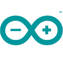
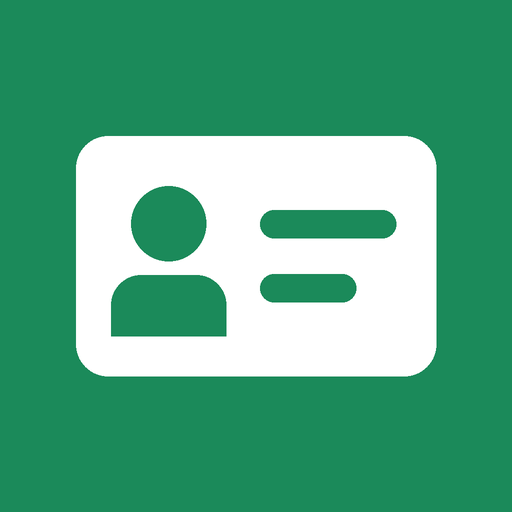

교육
- AI 개발자 양성 과정
- 정보통신공학 학사 (2022 ~ 2024 휴학)

Arduino여러 은행 거래를 일 단위로 분석하는 모니터링 서비스
설계, Backend, QA
5인 팀
2026.08 ~ 진행 중
리눅스 핵심 명령어를 C로 구현해 하나의 셸로 묶은 프로젝트
메인 구조, 통합 테스트
5인 팀
2025.05 ~ 2025.06
AI 에이전트가 일정을 고쳐도 안전한 캘린더
기획, 설계 결정, 검증, 운영
개인
2026.11 ~ 운영 중

다수의 인원이 실시간으로 겨루는 퀴즈 서비스
기획, 설계, 검증, 운영
개인
2026.10 ~ 운영 중
항해사 캐릭터 배치 탐색기와 화면 인식 도착 알림
기획, 설계, 검증, 운영
개인
2026.09 ~ 운영 중
어종별 활성도와 미끼, 수역 대시보드
기획, 데이터, 설계, 운영
개인
2026.06 ~ 운영 중
기상 예보를 반영해 연료가 가장 적은 항로와 속력 탐색
문제 정의, 측정, 검증 실험
개인
2026.11
불러오는 중